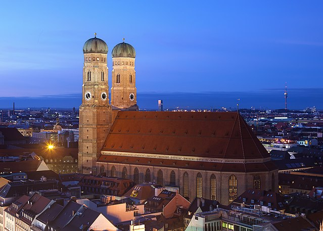

Der Dom zu Unserer Lieben Frau in der Münchner Altstadt, oft Frauenkirche genannt, ist seit 1821 die Kathedralkirche des Erzbischofs von München und Freising und zählt zu den Wahrzeichen der bayerischen Landeshauptstadt München. Der dreischiffige spätgotische Backsteinbau mit umlaufendem Kapellenkranz ist 109 m lang und 40 m breit, das Mauerwerk des Kirchenschiffs etwa 37 m hoch. Entgegen einer weit verbreiteten Legende, die besagt, dass die beiden Türme mit ihren charakteristischen Hauben sich um genau einen Meter in der Höhe unterscheiden, sind diese fast gleich hoch: Der Nordturm misst 98,57 Meter, der Südturm 98,45 Meter. Da die Stadtverwaltung im Stadtzentrum innerhalb des Mittleren Rings keine Gebäude mit einer Höhe von über 100 Metern erlaubt und auch außerhalb dieses Rings seit November 2004 vorläufig keine höheren Gebäude im Stadtgebiet mehr gebaut werden dürfen, sind die Türme weithin sichtbar. Der Nordturm ist nicht öffentlich zugänglich. Der Südturm kann normalerweise in den Monaten April bis Oktober besucht werden; wegen dringender Instandhaltungsarbeiten ist die Turmbesteigung aber seit 2012 bis auf Weiteres nicht möglich. Vom Hauptportal aus erscheinen die Säulenreihen wie durchlichtete Wände. Sie stützen die Sterngewölbe des Kirchenschiffs. Zur Raumwirkung der Kirche gibt es eine Legende, die mit einem Fußabdruck in einer quadratischen Bodenplatte im Eingangsbereich des Kirchenschiffs verbunden ist, dem sogenannten Teufelstritt.